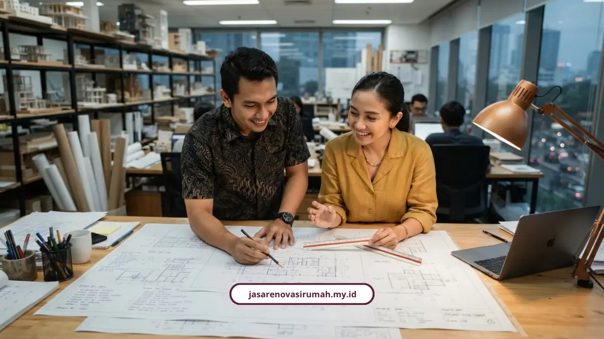
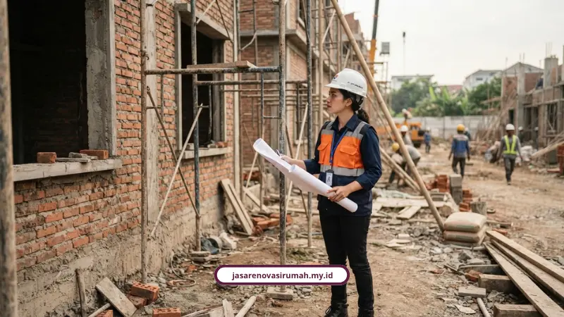

Proses desain arsitek Malang di tim kami berjalan lewat 7 tahapan, mulai dari konsultasi awal sampai pendampingan eksekusi di lapangan. Setiap tahap punya dokumen jelas supaya tukang tidak salah bangun dan anggaran tidak jebol.
Banyak calon klien datang ke kami dengan kekhawatiran yang sama: takut biaya membengkak, takut arsitek menghilang setelah DP masuk, atau bingung soal izin PBG. Proses yang runtut adalah jawaban paling masuk akal untuk semua itu.
Ar. Georgius Budi Yulianto, Ketua Umum Ikatan Arsitek Indonesia, menjelaskan bahwa desain arsitektur sekurang-kurangnya harus memenuhi lima kriteria: kekuatan struktur, kemudahan fungsional, keselamatan, kesehatan fisika bangunan, dan estetika. Kelima hal ini yang jadi acuan di setiap tahap kerja kami.
Apa Saja Tahapan Proses Desain Arsitek di Malang?
Ada 7 tahapan utama yang kami jalankan secara berurutan, mulai dari obrolan santai sampai pengawasan fisik di lapangan.
- Konsultasi konsep awal dan survei lahan.
- Visualisasi 3D fotorealistik dan pradesain.
- Penyusunan gambar kerja teknis atau Detail Engineering Design (DED).
- Penyusunan Rencana Anggaran Biaya (RAB) transparan.
- Legalitas perizinan PBG atau SIMBG dan SLF.
- Kontrak kerja resmi dengan skema pembayaran termin.
- Pendampingan eksekusi dan pengawasan berkala.
Tahap 1: Konsultasi Konsep Awal dan Survei Lahan
Di tahap ini kami menggali brief kebutuhan tata ruang, gaya hidup keluarga, orientasi lahan, gaya arsitektur, sampai alokasi anggaran yang Anda punya.
Kami juga memperhatikan kesehatan bangunan, seperti kecukupan pencahayaan alami dan sirkulasi udara yang disesuaikan dengan iklim Malang. Tim akan turun langsung ke lokasi untuk mengukur luas area secara presisi.
Tahap 2: Visualisasi 3D Fotorealistik dan Pradesain
Brief yang sudah dikumpulkan kami terjemahkan jadi denah 2D dan model visualisasi 3D eksterior maupun interior fotorealistik, sampai kualitas setara 4K.
Tahap ini dilengkapi kuota revisi terstruktur, jadi visual akhir bisa disepakati dulu sebelum fisik rumah mulai dibangun.

Tahap 3: Penyusunan Gambar Kerja Teknis atau DED
DED adalah cetak biru lengkap yang jadi panduan utama tukang dan kontraktor di lapangan, bukan sekadar gambar tampak depan saja.
- Gambar arsitektur: denah, tampak depan, samping, belakang, potongan, detail kusen, serta rencana pola lantai dan plafon.
- Gambar struktur: rencana pondasi, sloof, kolom, pembalokan, pembesian, dan struktur atap.
- Gambar MEP dan plumbing: titik lampu, saklar, instalasi listrik, saluran air bersih dan kotor, sampai detail septictank.
Tahap 4: Penyusunan Rencana Anggaran Biaya (RAB) Transparan
RAB kami susun terperinci berdasarkan spesifikasi material dan harga pasaran lokal Malang Raya, bukan hasil tebakan asal comot angka.
Muhammad Musyaffa, arsitek principal dan lead structural estimator di Malang, menjelaskan pentingnya penyusunan RAB berbasis harga pasaran material lokal secara transparan serta pengawasan berkala agar detail fasad dan proporsi ruang tetap presisi sesuai rancangan 3D.
Untuk gambaran biaya renovasi secara menyeluruh, Anda bisa membaca panduan biaya renovasi kamar mandi Malang 2026 yang membahas estimasi per ukuran dan material.
Tahap 5: Legalitas Perizinan PBG dan SLF
Tahap ini menyiapkan berkas gambar teknis standar untuk pengajuan Persetujuan Bangunan Gedung atau PBG dan Sertifikat Laik Fungsi atau SLF lewat portal SIMBG.
Prosesnya di Kota Malang melibatkan Dinas PUPRPKP untuk verifikasi teknis dan Disnaker PMPTSP untuk administrasi, berpedoman pada Perda Kota Malang Nomor 4 Tahun 2023 dan Surat Edaran Wali Kota Malang Nomor 17 Tahun 2022.
I Made Riandiana Kartika, Ketua DPRD Kota Malang, menekankan pentingnya kelengkapan dokumen teknis arsitektur saat mengurus PBG, karena masih banyak masyarakat mengalami kendala izin tertahan hingga berbulan-bulan akibat berkas perencanaan yang tidak memenuhi standar.
Sumiyati dan Indra, tim operator SIMBG Dinas PUPRPKP Kota Malang, mengungkapkan bahwa salah satu hambatan terbesar pelayanan perizinan bangunan adalah kurangnya pemahaman pemohon dalam mengunggah berkas teknis sesuai standar verifikasi sistem.
Tahap 6: Kontrak Kerja Resmi dan Skema Pembayaran Termin
Kontrak kami susun lengkap dengan delapan komponen wajib supaya kedua belah pihak sama-sama terlindungi secara hukum.
- Identitas para pihak dan lokasi proyek.
- Nilai imbalan jasa dan pajak.
- Jangka waktu pengerjaan.
- Batasan jumlah revisi.
- Klausul hak cipta karya arsitektur.
- Prosedur penyelesaian perselisihan serta syarat pembatalan atau force majeure.
M. Abdul Rosyid, praktisi dan konsultan properti, menegaskan bahwa memahami kontrak kerja arsitek merupakan langkah krusial untuk mencegah sengketa di masa depan sekaligus jadi payung hukum yang mengikat kedua belah pihak secara resmi.
Pembayaran dilakukan bertahap berdasarkan milestone, misalnya skema 3 termin atau 6 tahap standar IAI, dan tidak dibenarkan membayar lunas 100 persen di awal. Soal hak cipta, karya tetap dipegang arsitek, sementara klien membeli hak pakai eksklusif untuk satu lokasi proyek spesifik.
Tahap 7: Pendampingan Eksekusi dan Pengawasan Berkala
Pengawasan visual kami lakukan berkala di lapangan, sekitar 1 sampai 2 kali per bulan, untuk memastikan pelaksanaan kontraktor sesuai presisi cetak biru 3D dan DED.
Berapa Estimasi Biaya di Tiap Tahapan Proses Desain?
Biaya perencanaan di Malang umumnya berkisar Rp15.000 hingga Rp200.000 per m2 tergantung kompleksitas proyek.
- Paket desain dasar sekitar Rp25.000 per m2, standar Rp35.000 per m2, dan premium Rp50.000 per m2.
- Jasa pemetaan atau gambar untuk IMB, PBG, dan SLF teknis mulai dari Rp30.000 per m2.
- Untuk proyek skala besar, fee arsitek juga bisa dihitung 5 sampai 8 persen dari total RAB pembangunan.
Ar. Ida Bagus Gede Sasra Bhanutama, arsitek berlisensi pemegang STRA, menegaskan bahwa perencanaan rumah harus dilakukan secara teliti bersama arsitek berlisensi untuk memastikan fungsi ruangan optimal, anggaran efisien, dan struktur bangunan kokoh sehingga meminimalisir potensi salah bangun di lapangan.
Gilang Dirga, publik figur yang pernah memakai jasa arsitek, mengulas bahwa ide dasar bangunan bisa berasal dari klien, lalu arsitek menyempurnakan dan menuangkannya ke dalam desain presisi sehingga ide yang sebelumnya belum terbayangkan bentuknya bisa terwujud secara nyata.
Seluruh tahapan di atas adalah bagian dari layanan jasa arsitek Malang kami yang sudah mencakup desain estetis, struktur kokoh, sampai pendampingan kontrak dalam satu paket menyeluruh.
Kenapa Legalitas PBG Penting Sebelum Bangun?
Karena tanpa PBG, bangunan Anda berpotensi dianggap tidak sesuai regulasi dan bisa menyulitkan proses jual beli atau klaim asuransi di kemudian hari.
Dokumen teknis yang tidak lengkap juga sering jadi penyebab utama izin tertahan berbulan-bulan di sistem SIMBG, jadi lebih baik disiapkan sejak tahap DED daripada diurus belakangan setelah bangunan berdiri.
Siap Mulai Proses Desain Rumah Anda?
Kalau Anda ingin proses yang jelas dari awal sampai serah terima, tim kami siap dampingi setiap tahapnya. Lihat juga layanan lainnya dari kami di layanan jasa lainnya untuk kebutuhan desain, konstruksi, sampai perizinan dalam satu pintu.
Proses desain yang runtut memang butuh waktu, tapi itu jauh lebih baik daripada terburu-buru lalu berujung bongkar pasang di tengah pembangunan. Setiap tahap yang kami jalankan punya dokumen jelas supaya Anda tahu persis sedang berada di fase mana.
FAQ Seputar Proses Desain Arsitek Malang

Naura Regyna Putri
Penulis Profesional & Praktisi Konstruksi
Naura Regyna Putri adalah seorang penulis profesional yang memiliki ketertarikan mendalam pada dunia arsitektur dan konstruksi. Dengan pengalaman bertahun-tahun mengamati tren renovasi rumah, ia aktif membagikan panduan praktis, tips RAB, dan wawasan seputar material bangunan untuk membantu pemilik rumah mewujudkan hunian impian mereka dengan anggaran yang efisien.